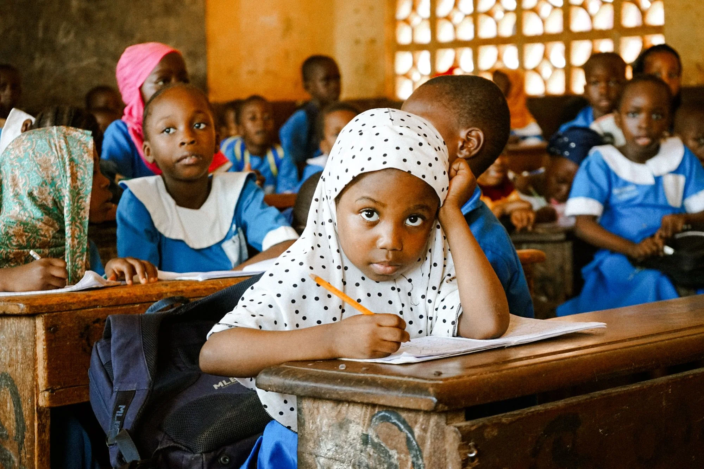
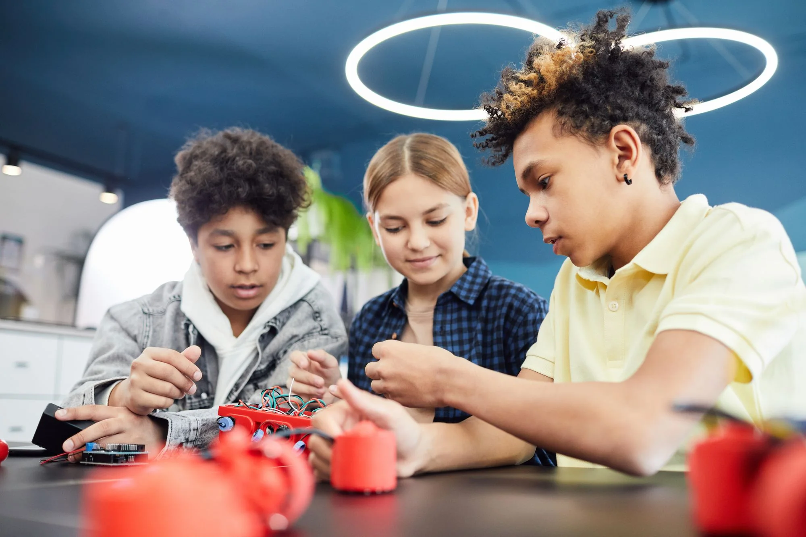
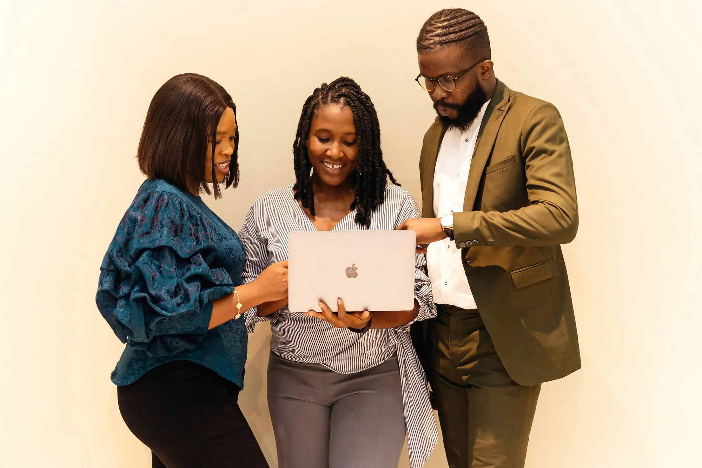
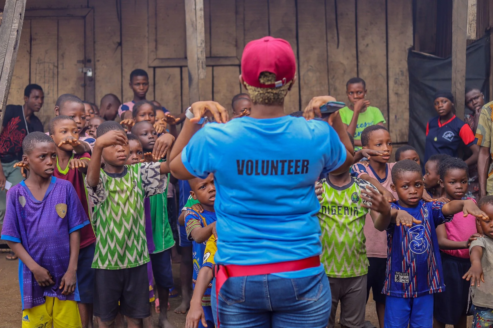

Our vision
A generation that builds a better future.
We envision a generation of principled, innovative, capable, and responsible individuals who do more than dream about a better future — they develop the mindset, character, knowledge, and skills to create it.
We envision young people who understand that their future is not something they simply wait for. It is something they prepare for, work towards, and build through intentional decisions, continuous learning, courage, and meaningful action.
A generation that thinks independently, questions constructively, creates opportunities, solves problems, and understands that personal success becomes even more meaningful when it contributes to the progress of others.
“We see a generation that does not merely inherit the future, but takes responsibility for building it.”
The people behind the progress
The generation we hope to raise
BUILVANTA is not simply interested in what young people can become individually. We are interested in the kind of people they become and the impact they make.
- The thinker
- Someone who reasons, questions, learns, and makes informed decisions rather than simply following the crowd.
- The creator
- Someone who transforms ideas into useful solutions, products, services, and opportunities.
- The leader
- Someone who takes responsibility, demonstrates integrity, serves others, and leads through positive example.
- The innovator
- Someone who embraces new possibilities and uses creativity and emerging technologies to solve real problems.
- The builder
- Someone who develops themselves, creates value, strengthens communities, and helps others grow.
These are not titles to be awarded. They are qualities we want to cultivate in the next generation.
01 / The power of mindset
The future we see
We see a future where young people are not limited by the circumstances they were born into, the opportunities they were denied, or the expectations society places on them. We see young people who discover their abilities early, develop their potential intentionally, and gain the confidence to pursue meaningful goals.
- Think beyond limitationsBe curious, independent-minded, informed, and willing to challenge assumptions.
- Create instead of only consumingUse knowledge, technology, creativity, and innovation to develop solutions and create value.
- Live with purpose and integrityGround ambition in discipline, responsibility, honesty, and character.
- Build meaningful opportunitiesDevelop skills, explore entrepreneurship, embrace innovation, and contribute to economic growth.
- Lift others as you growMeasure progress by personal achievement and the positive difference you make.

02 / The power of innovation
Learn, imagine, create.
We imagine young people who transform their curiosity into useful ideas. They explore new possibilities, understand emerging technologies, and put what they learn to work on real problems.
Innovation is not only about having a new idea. It is the courage to experiment, the patience to learn from what does not work, and the determination to keep shaping a solution that creates value.

03 / The power of collaboration
Progress is built together.
No generation builds a better future alone. It takes people who share knowledge, listen with respect, challenge one another constructively, and bring different strengths to a common purpose.
When young people learn to work across differences, an individual idea can become a shared opportunity — and a community can move further than any one person could alone.

04 / The power of leadership
Lead by taking responsibility.
We want to see more responsible leaders, creative problem-solvers, and ethical entrepreneurs. Leadership is not simply about standing ahead; it is about acting with integrity, serving with purpose, and helping people move forward together.
A better society begins with people willing to become better themselves. The knowledge we acquire should help us solve problems. The influence we gain should be used responsibly. The opportunities we create should open doors for others.
05 / The power of building others
Let your growth make room for others.
Personal development should not end with personal achievement. We want young people to grow into adults who are prepared not only to succeed in life, but also to make life better for others.
Stronger communities are built when people share what they know, mentor with care, and turn their own progress into encouragement and opportunity for someone else.

A future we build together
Our beginning is local. Our vision reaches further.
We are beginning with young people aged 15–20 in Ekiti State, Nigeria, but our vision is much bigger than our starting point. The impact we imagine reaches families, communities, industries, and society as a whole.
It will take learning, mentorship, collaboration, courage, opportunity, and a willingness to keep growing. We may begin with a small community, but the future we want to help build belongs to all of us.
The future is not something we wait for. It is something we build.
BUILVANTA — THE GENERATION THAT BUILDS.
Build Yourself. Build Value. Build Others.
Join the BUILVANTA community